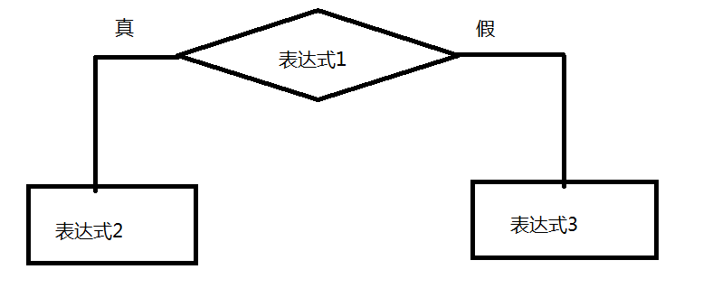

body, td { font-family: 微软雅黑; font-size: 12pt; }
分享学习方法 (李春娥)
一、学习方法引导
1、具有良好的编程习惯
2、大胆动手，不要怕错
3、遇到问题积极解决，乐观面对错误
4、吃好穿好心大点
二、具备一定的就业能力
1、分析能力
2、独立思考能力
3、程序阅读能力
4、程序排错能力
5、独立填写程序能力
6、团队协作能力
7、学习能力
8、善于总结问题的能力
9、表达能力
三、课程安排
8 js 5
jq 1
前端自动化 2-3
四、上下课时间安排
9:30 11:00
2--3
3:10--4:10
1、什么JavaScript？
一门前端的脚本语言 用来与web页面进行交互
js能够实现 ： 验证 、 轮播、放大镜....
2、js的历史背景
布莱登.艾奇
JavaScript诞生于1995年。起初它的主要目的是处理以前由服务器端负责的一些表单验证。在那个绝大多数用户都在使用调制解调器上网的时代，用户填写完一个表单点击提交，需要等待几十秒，完了服务器反馈给你说某个地方填错了......在当时如果能在客户端完成一些基本的验证绝对是令人兴奋的。当时走在技术革新最前沿的Netscape（网景）公司，决定着手开发一种客户端语言，用来处理这种装简单的验证。当时就职于Netscape公司的布兰登·艾奇开始着手计划将1995年2月发布的LiveScript同时在浏览器和服务器中使用。为了赶在发布日期前完成LiveScript的开发，Netscape与Sun公司成立了一个开发联盟。而此时，Netscape为了搭上媒体热炒Java的顺风车，临时把LiveScript改名为JavaScript，所以从本质上来说JavaScript和Java没什么关系。
95 -- 网景 liveScript
java javascript
h5 :
h5 和 js 关系 ： 是一样的 目的都是让静止的东西动起来
3、javascript的组成？
ECMAScript 欧洲计算机制造商协会 规范js语法 es6
BOM
DOM
4、javascript 代码实现 内部脚本或外部连接
1、在script标签中实现js代码编写
2、script标签的位置任意 （除了title中）
3、外部引入js文件 ： <script src="outer.js"> </script> 注意 ： 此时标签内部的js代码是无效的
5、javascript的几个输出语句
alert() 弹出一个对话框 阻塞浏览器其他代码执行 \n
document.write() 在浏览器中打印
console.log() 在控制台中打印
6、js中的注释
7、js中的字面量（常量）
数值 ：
整数 ：
十进制 0--9
二进制 0--1
八进制 0--7 用0开头
十六进制 0--9 a--f 用0x开头
小数
字符型 ：
通过 单引号 或 双引号 括起来 注意引号嵌套 ： " '' " ' " " '
8、js中标识符（变量）的命名规范
变量 ： 程序运行时 变量 值有可能会发生变 化
标识符 命名规范 ：
1、由字母、数字、下划线、$ 组成 （中文也可以）
2、不能用 数字开头 a1 a_1
3、不能用程序制定的关键字命名
4、不要情绪化命名
驼峰式命名 ：
小驼峰： qianFengJiaoYu document.getElementById() charCodeAt()
大驼峰： QianFengJiaoYu 【注】：构造函数一般用大驼峰表示
匈牙利命名法：
iNum
fNum
sStr
变量要求 ： 先定义 后使用
10、变量的定义和赋值
显式定义（提倡） 通过var定义变量
隐式定义 var被省略
11、js中输出结果时注意几个问题：
1、如果输出是一个变量 变量不能加引号
2、如果输出是一个字符 必须加引号
3、如果输出的是数值 引号可以加也可以不加
4、 如果输出的既有变量 又有字符，变量和字符之间用 + 连接
12、变量的数据类型（重点）
基本类型 ：
字符型 string
数值型 number
布尔型 boolean 值有两个 ： true false
复合数据类型（引用类型、对象类型）：
【注】：引用类型，复合类型更标准，因为这种类型在栈中存放的只是地址，堆的地址，堆中存放的是内容，修改堆中内容，多有存放该对象地址的数据都会改变
对象 object
特殊数据类型 ：
null 空
undefined 未定义
console.log(typeof null)//object,null是一种特殊的对象类型
13、（扩展） 测试变量的数据类型
typeof 测试 用法 ：typeof 变量名 或 typeof(变量名)
function fn(){
}
console.log(typeof fn)//function
14、运算符和表达式 （重点）
运算符 ： 操作符号 + - ..........
表达式 ： 可以是一个常量、变量、式子
运算符要解决的问题 ：
运算符有哪些 ？
表达式对应的值 ？
15、算术运算符
运算符有哪些 ？
单目 ： ++ 自增 -- 自减 （难点） 【注】：加加在前，先计算，后赋值；加加在后，先赋值，后计算。表达式
双目 ： + - * / %（求余数、 模）
表达式的值 ：
- * / % ：
1、如果运算符两侧都是数值类型 正常计算
2、如果运算符两侧中有一侧是纯数字字符串， 字符串会自动转成数值类型进行计算
3、如果运算符两侧中有一侧是非纯数字字符串，结果就是NaN NaN ： not a number 不是一个数
4、如果是布尔类型参与运算，true会自动转成1 false自动转成0
% : 模 任何一个数 % 10 = 个位数
4%7 = 4
7%4 = 3
123%10 = 3
98876%10 =6
7%10 = 7
-7%10 = -7 【注】：取余%的结果和%左边的符号相同
7%（-10） = 7
console.log(-7%10)//-7
console.log(7%-10)//7
+ ： 数字和字符串相加表示 连接 10 + "10" = 1010 10+"10" - 10 = 1000 结果类型 number
自增运算符 ：
++ ： 要求运算符某侧的操作数必须是一个变量
var i = 9；
i++; 或 ++i;
i++和++i的异同 ：
相同点 ： 自增变量都会自增1
不同点 ： 表达式的值不同 （难点）
如果 ++ 在前 ， ++i ， 先将自增变量i加1，再将i的值赋值给整个表达式 （先自增后赋值）
如果 ++ 在后 ， i++ , 先将自增变量i的值赋值给整个表达式，自增变量i再jia1 （先赋值后自增）
16、赋值运算符
= 赋值 ： var i = 10; 注意 ： = 左侧必须是变量 i+j = 10;错 i = 10-j 正确
复合赋值运算符 ： += -= *= /= %=
var i = 10；
i+=1; 等价于 i = i + 1 或 i++
17、关系运算符
运算符 ：
== 等于 === 全等于 > >= < <= != 不等 !== 不全等
5==6 5>=6
1、关系表达式的结果是布尔类型
2、表达式两侧都是数值 正常比较
3、表达式两侧都是字符串 正常比较，比较字符的ASCII码值 "0" -- 48 "a" -- 97 "A" -- 65
4、表达式两侧有一侧是纯数字字符串 ，该字符串进行自动转成数值 进行比较
5、表达式两侧有一侧是非数字字符串，不能正常比较 结果是false 不能正常比较的结果都是false
==和===区别 ：
== 只比较值是否相等
=== 先比较类型，再比较值
console.log(3!="3")//false !=不等
console.log(3!=="3")//true !==不全等
18、逻辑运算符
运算符 ： && 与 || 或 ！ 非（单目）
一般情况下 ， 逻辑运算符操作的都是布尔类型数据
3>4 && 7==7 7<9 || 9>0 !true
&& 表达式的值 ： &&两侧都为true，结果是true 否则就是false
|| 表达式的值 ： || 两侧都为false，结果是false 否则就是true
! : !true---> false !false --- > true 非真即假 非假既真
扩展 ： 短路问题
true || 表达式 该表达式不执行
false && 表达式 该表达式不执行
在逻辑运算中 ：
非0为真 0 为假
如果 || 或 &&两侧不是布尔类型 ，结果取操作数的具体值
console.log(3&&8)//8 数字0为假，其他数值为真，空串为假，其他为真，null为假，对象为真，undefined为假，值不为undefined的变量为真
console.log(0&&8)//0
console.log(3||8)//3
console.log(0||8)//8
19、条件运算符 (三目运算符)
运算符 ： ? :
条件表达式 ： 表达式1 ? 表达式2 : 表达式3
条件表达式的结果 ： 如果表达式1的结果为真，取表达式2的值作为整个条件表达式的值，否则取表达式3的值作为整个条件表达式的值

20、 用户输入
练习：
练习：计算这个表达式的值 ： 10 + "2" - "1" 101
10 + "2" - "1r" NaN
写一个表达式： 变量i能被3整除 i%3==0
写一个表达式： 变量 i 既能被2整除，又能被5整除 i%2==0 && i%5 ==0
写一个表达式 ： 变量i 大于3 或 大于 10 i>3 || i>10
写一个表达式： 变量 i 能被4整除但不能被100整除 或 能被400整除 (闰年条件)
( i%4==0 && i%100!=0 ) || (i%400 == 0)
写一个表达式 ： 如果变量i能被2整除，输出 ： 偶数 否则输出奇数 i%2==0 ? "偶数" ： "奇数"
已知 k = 2
k++ + ++k + k++ + k 15
2 4 4 5
k 3 4 5
为抵抗洪水，战士连续作战89小时，编程计算共多少天零多少小时？
parseInt(89/24) 天
89%24
小明要到美国旅游，可是那里的温度是以华氏度为单位记录的。
它需要一个程序将华氏温度（80度）转换为摄氏度，并以华氏度和摄氏度为单位分别显示该温度。
提示：摄氏度与芈氏度的转换公式为：摄氏度 = 5/9.0*(华氏度-32)保留3位小数 toFixed(3)
(5/9.0*(80-32)).toFixed(3)
已知两个变量，var iOne = 12,iTwo = 33,将两个变量的值交换后输出